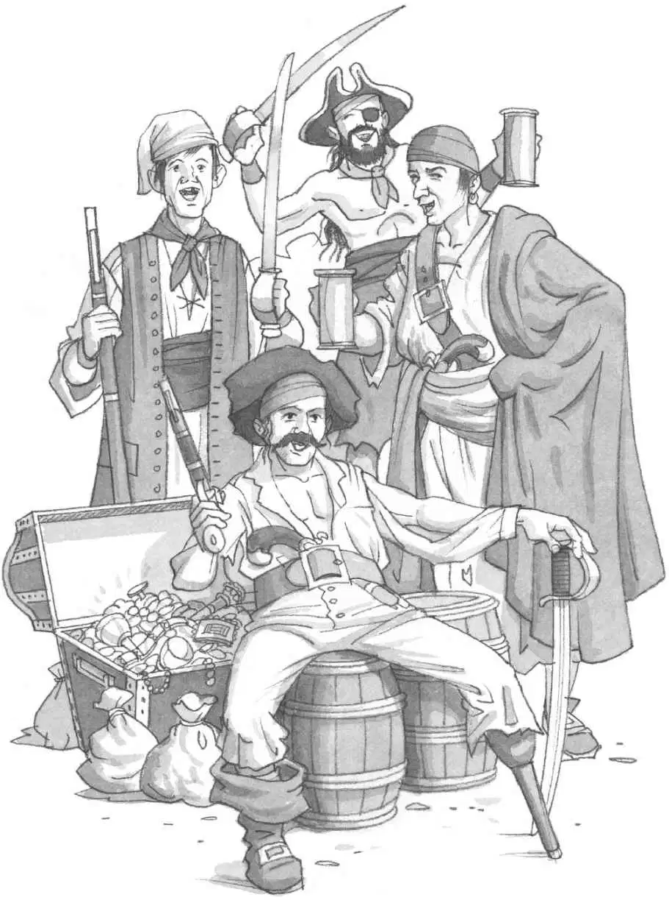
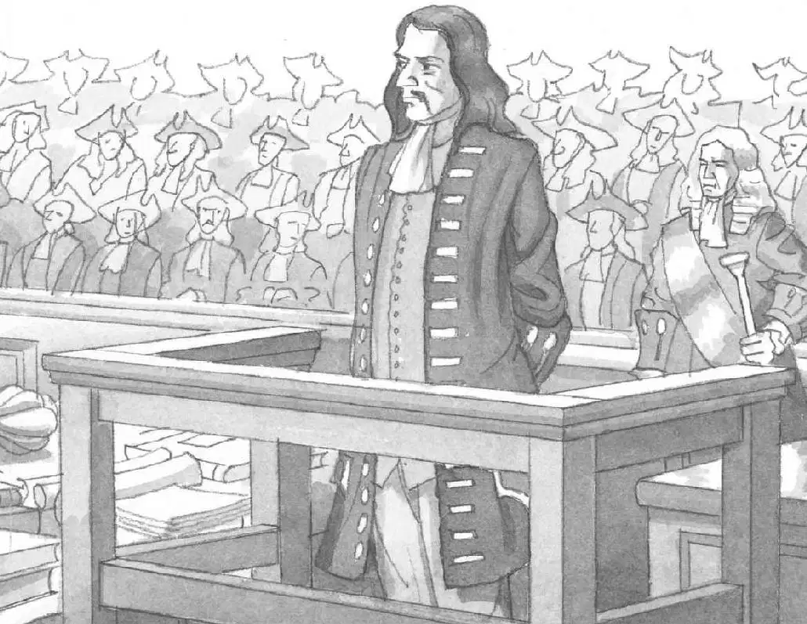
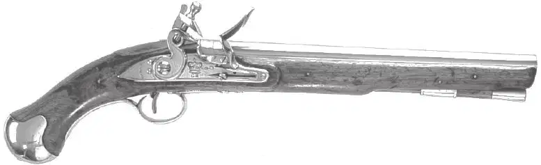

1.海盗的历史十分悠久，最早可以追溯到人类航海业的开始。这群海上的强盗既袭击海面上的船只，也会对沿海的城镇发起进攻。大部分的海盗都过着十分悲惨的生活，他们吃不上新鲜的食物，有时还会染上致命的疾病，很多人死于海战和海难。然而，死亡的威胁并没有吓退海盗们，每年仍然有数以千计的人成为海盗，他们驾船出海，去寻找财富。
2.掠夺西班牙殖民地和美洲沿岸船只的海盗被称为加勒比海盗。他们中的大多数人是来自英国、荷兰和法国的罪犯。加勒比海盗一开始并没抢劫船只的打算，但在17世纪30年代，西班牙统治者决定要把他们都赶走，加勒比海盗被激怒了，才开始抢劫西班牙船只。
3.当海盗占领一艘船后，他们会将所有有价值的东西洗劫一空，例如香烟、香料和糖等，然后会将这些东西运到岸上去卖。海盗们把抢来的财物叫作战利品。对于他们来说，最好的战利品是金子，所以海盗们的梦想就是能打劫一艘装满了金币、金条或者金首饰的船只。

4.基德船长是纽约的一名船长。1695年，英格兰国王雇佣他去抓捕海盗，保护商船。在这个过程中，他和船员却加入了海盗的行列，回过头来袭击商船。基德船长回国后就被抓了起来，接受审判。基德船长在被抓之前把部分财宝埋藏了起来。后世也流传着许多有关基德船长宝藏的传说。


5.18世纪，很多海盗都带着一种叫作燧发枪的手枪。燧发枪每次只能射出一发子弹，然后就需要再次上膛，所以在战斗中，海盗们通常会一手拿一支。海盗也会使用长长的火枪。和燧发枪相比，火枪的准度更高，可以在百米开外击中目标。